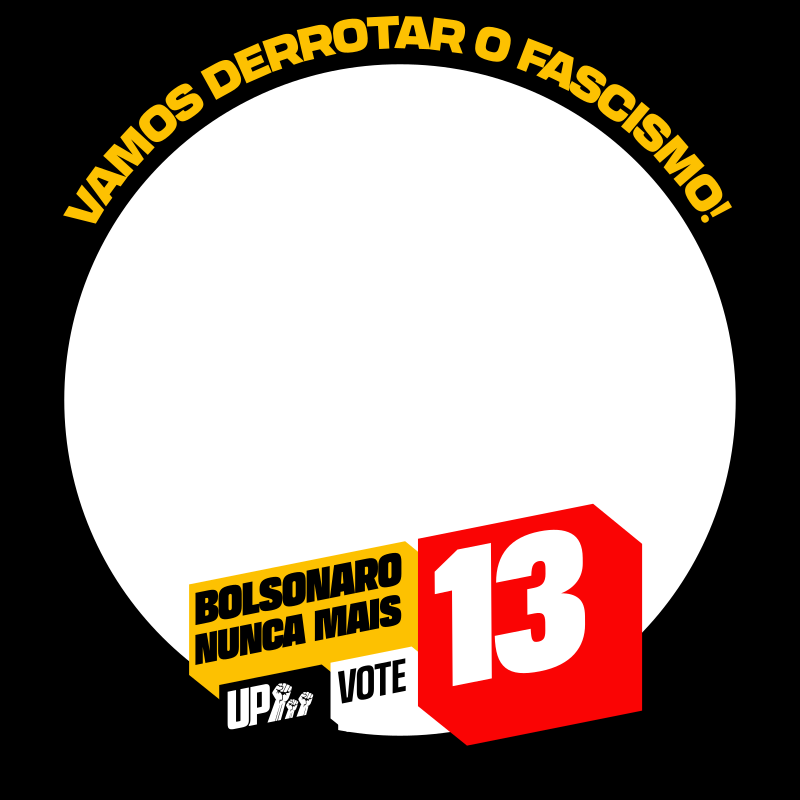

Vamos derrotar o fascismo!
No segundo turno, a Unidade Popular convoca todo o povo a votar 13, em Lula, para impedir a eleição de Flávio Bolsonaro. Bolsonaro nunca mais!
Coloque o filtro na sua foto de perfil e ajude a espalhar essa mensagem. É rápido, fácil e seguro: sua foto não sai do seu celular ou computador. ☭
1 Escolha uma foto sua
Toque no botão abaixo e escolha uma foto da sua galeria.
2 Ajuste a posição da foto
Arraste a foto com o dedo (ou o mouse) até ficar do jeito que você quiser. Os botões − e + aproximam ou afastam a imagem.

3 Baixe sua foto
Ficou boa? Baixe a imagem e já pode usar como sua foto de perfil!
Prontinho! ✊ Já pode usar como sua foto de perfil. Bolsonaro nunca mais!
4 Espalhe por aí!
Mande esse site para seus amigos e familiares e ajude mais gente a colocar o filtro. Vamos derrotar o fascismo!
Compartilhar no WhatsApp